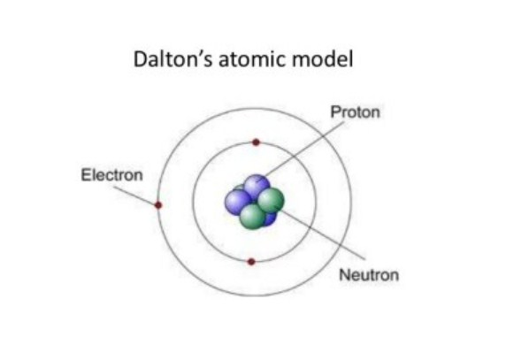
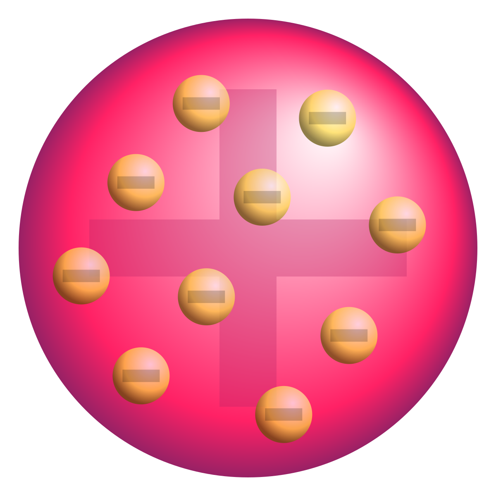
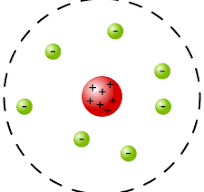
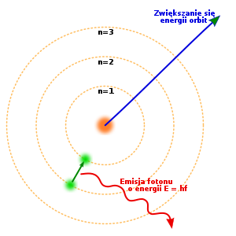
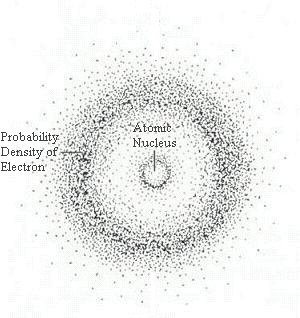
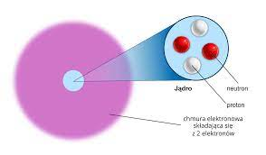
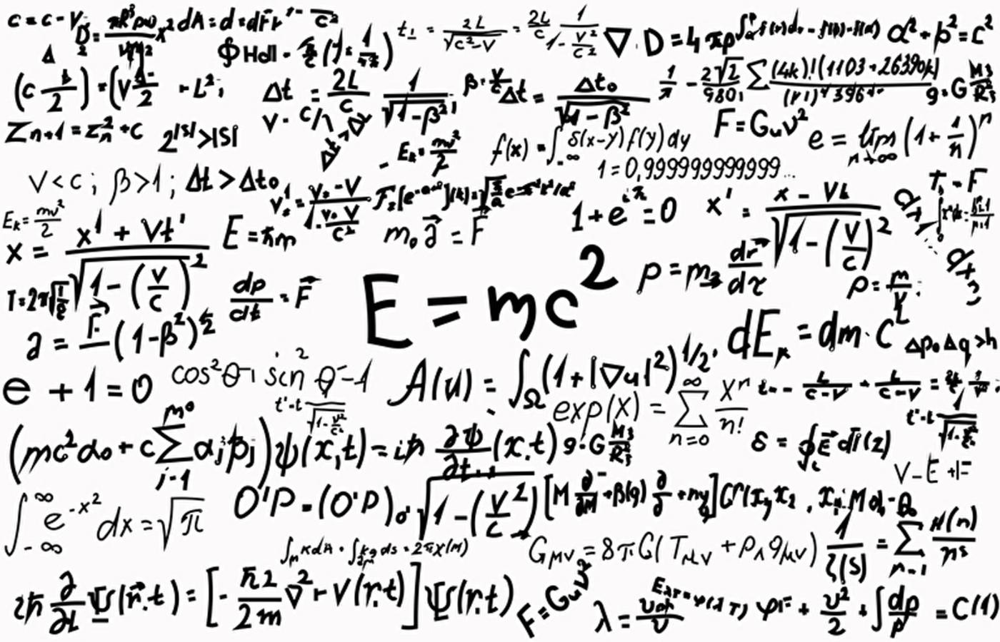
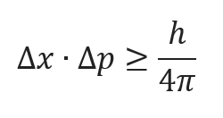
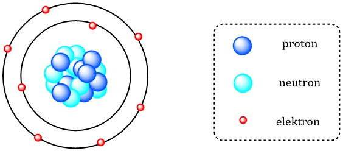

Model Daltona (1803)
John Dalton przedstawił teorię atomową, zakładając, że atomy są nierozdzielne i mają jednolitą strukturę. Każdy atom danego pierwiastka ma tę samą masę i właściwości chemiczne. Jednakże, współczesne badania nad atomami ujawniły, że są one składnikami bardziej złożonymi niż początkowo zakładał Dalton. Odkrycie subatomowych cząstek, takich jak protony, neutrony i elektrony, pozwoliło na lepsze zrozumienie budowy atomów.
Późniejsze badania wykazały, że atomy danego pierwiastka mogą różnić się masą w wyniku istnienia izotopów, czyli atomów tego samego pierwiastka, posiadających różną liczbę neutronów. Dodatkowo, teoria atomowa została rozwinięta w kontekście modelu Bohra, który wprowadził koncepcję orbit elektronowych, co dodało nowe elementy do zrozumienia struktury atomu.
Niezależnie od ewolucji teorii atomowej, wkład Johna Daltona jest kluczowy dla fundamentów chemii, a jego założenia stanowią punkt wyjścia dla dalszych badań nad mikroskopowym światem materii.
Źródło: https://pl.wikipedia.org/wiki/Teoria_atomistyczna_Daltona

Model Thomsona (1897)
Joseph J. Thomson odkrył elektron, co doprowadziło do stworzenia modelu budowy atomu jako kulki z dodatnim ładunkiem, wewnątrz której znajdują się elektrony. Ten model był nazywany "ciasteczkowym budynkiem". Wraz z kolejnymi eksperymentami i badaniami nad strukturą atomu, udoskonalono ten model, zastępując go bardziej złożonym modelem, taki jak model atomu według Bohra. W nowym podejściu wprowadzono pojęcie energii poziomów elektronowych, co pozwoliło lepiej wyjaśnić widma emisyjne atomów i ich zachowanie. Te sukcesywne modyfikacje modeli atomowych ukazują dynamiczny charakter postępu w dziedzinie fizyki jądrowej i chemii, a wkład Thomsona jest kluczowy dla rozwoju naszego zrozumienia struktury atomu.
Źródło: https://pl.wikipedia.org/wiki/Model_atomu_Thomsona

Model Rutherforda (1911)
Ernest Rutherford zaproponował model atomu, w którym skoncentrowane dodatnie naładowane jądro jest otoczone wirującymi elektronami. Eksperyment z rozpraszaniem cząstek alfa dostarczył dowodów na istnienie jądra atomowego. Jednak, podobnie jak w przypadku teorii atomowej Johna Daltona i modelu Thomsona, rozwój naszej wiedzy poszedł dalej. Niels Bohr rozszerzył ten model, wprowadzając koncepcję kwantowania energii elektronów i określonej orbity, co pozwoliło lepiej opisać widma emisyjne atomów.
Źródło: https://pl.wikipedia.org/wiki/Model_atomu_Rutherforda

Model Bohra (1913)
Niels Bohr rozwiniął model Rutherforda, wprowadzając poziomy energetyczne dla elektronów, co pozwoliło na lepsze wyjaśnienie widma atomowego wodoru. Modele Bohra miały ograniczone zastosowanie dla atomów o większej liczbie elektronów. Kolejny istotny krok w rozwinięciu modelu atomowego nastąpił dzięki pracy Schrödingera i mechaniki kwantowej, która pozwoliła na opisanie bardziej złożonych struktur atomowych, uwzględniając zjawiska falowe i prawdopodobieństwo położenia elektronów.
Źródło: https://pl.wikipedia.org/wiki/Model_atomu_Bohra

Model Schrödingera (1926)
Erwin Schrödinger opracował równanie falowe, które jest jednym z kluczowych elementów teorii kwantowej. To równanie matematyczne opisuje rozkład przestrzenny funkcji falowej elektronu, która reprezentuje stan kwantowy elektronu w polu elektromagnetycznym generowanym przez jądro atomowe. Model ten zakłada, że elektrony wykazują zarówno cechy cząsteczkowe, jak i falowe.
Jednym z fascynujących aspektów tego modelu jest to, że nie precyzuje on trajektorii elektronu wokół jądra, ale raczej określa prawdopodobieństwo znalezienia elektronu w danej lokalizacji. Interpretacja tej funkcji falowej prowadzi do pojęcia orbitali, które są obszarami przestrzeni, w których elektron z dużym prawdopodobieństwem może zostać znaleziony.
Równanie falowe Schrödingera jest fundamentalne dla zrozumienia struktury atomów i molekuł, a jego rozwinięcia i aplikacje mają znaczący wpływ na dziedziny takie jak chemia kwantowa i fizyka materii skondensowanej. To jedno z kluczowych narzędzi w badaniu mikroskopowego świata materii oraz w opracowywaniu nowoczesnych technologii kwantowych.
Źródło: https://pl.wikipedia.org/wiki/Równanie_Schrödingera

Model współczesny
Współczesne teorie atomowe, takie jak model atomu według mechaniki kwantowej, kontynuują ewoluować, uwzględniając bardziej zaawansowane aspekty zachowań subatomowych cząstek. W miarę postępu technologii, nowoczesne eksperymenty i zaawansowane obliczenia naukowe umożliwiają coraz bardziej precyzyjne zrozumienie struktury atomowej. Dziedzina ta pozostaje fascynującym obszarem badań, a wkład Rutherforda jest niezaprzeczalny w historii rozwoju tej gałęzi nauki.
Źródło: http://ncbj.edu.pl/zasoby/modele_atomu/3.7.pdf

Teoria kwantowa
Teoria kwantowa głosi, że zachowanie się cząstek subatomowych nie jest deterministyczne, a jedynie prawdopodobieństwem. To fundamentalne podejście wyjaśnia wiele zjawisk mikroskopijnych, takich jak efekt fotoelektryczny.
Źródło: https://chat.openai.com

Zastosowania
Współczesne badania struktury atomowej mają ogromne znaczenie w dziedzinach takich jak fizyka jądrowa, chemia kwantowa, a także technologie związane z nanotechnologią. Znalezienie nowych materiałów i zastosowań opiera się na głębokim zrozumieniu budowy atomu.
Mechanika Kwantowa
Mechanika kwantowa jest teorią fizyczną opracowaną w XX wieku, która opisuje zachowanie się cząstek na bardzo małych skalach, takich jak atomy, cząsteczki i subatomowe cząstki, w tym elektrony.
Jednym z kluczowych założeń mechaniki kwantowej jest to, że stan kwantowy cząstki jest opisany funkcją falową, zwana funkcją falową Schrödingera. Ta funkcja falowa zawiera informacje o stanie kwantowym cząstki, takie jak jej położenie, pęd i inne właściwości. Jednakże, zgodnie z zasadą nieoznaczoności Heisenberga, jednoczesne precyzyjne określenie położenia i pędu cząstki jest niemożliwe.
Zamiast tego, mechanika kwantowa umożliwia przewidywanie jedynie prawdopodobieństwa znalezienia cząstki w danym miejscu. W matematycznym formalizmie mechaniki kwantowej, kwadrat modułu funkcji falowej dostarcza rozkład prawdopodobieństwa, a obszary, w których prawdopodobieństwo jest większe, nazywane są orbitalami.
Mechanika kwantowa jest niezwykle potężnym narzędziem do opisywania mikroskopowego świata materii, a jej zastosowania obejmują dziedziny takie jak chemia kwantowa, fizyka jądrowa, a nawet dziedziny technologii kwantowej.
Źródło: https://pl.wikipedia.org/wiki/Mechanika_kwantowa

Modele Jądra Atomowego
Badania jądra atomowego przyczyniły się do opracowania różnych modeli, które pomagają zrozumieć stabilność jądra i procesy jądrowe. Oto kilka modeli jądra atomowego:
Model płaskiego jądra:
Model ten traktuje jądro jako płaską strukturę, w której protony i neutrony są rozmieszczone na jednej płaszczyźnie. Chociaż ten model jest dość prosty, nie oddaje on dokładnie złożonej struktury jądra.
Model ciekłego jądra:
Model ten zakłada, że jądro jest jak ciecz, w której protony i neutrony poruszają się swobodnie. Ten model pomaga w zrozumieniu pewnych cech jądrowych, takich jak promieniowanie gamma, ale również ma swoje ograniczenia.
Model jądra składającego się z protonów i neutronów:
To podejście traktuje jądro jako zbiór protonów i neutronów, które są zamknięte w potencjalnej studni jądrowej. Model ten uwzględnia interakcje między nukleonami i pomaga wyjaśnić, dlaczego pewne jądra są stabilne, a inne ulegają rozpadowi.
Wszystkie te modele mają swoje ograniczenia, i żaden z nich nie opisuje jądra w pełni. W rzeczywistości, obecnie stosuje się bardziej zaawansowane modele oparte na teorii kwantowej chromodynamiki kwarków i oddziaływaniach między nukleonami. Badania jądra atomowego są nieustannie rozwijane, a nowe eksperymenty i symulacje pomagają lepiej zrozumieć tę fascynującą dziedzinę fizyki.
Źródło: https://pl.wikipedia.org/wiki/Jądro_atomowe

Teoria Względności Einsteina
W teorii względności Einsteina, masa i energia są ze sobą związane zgodnie z równaniem E=mc^2. To odkrycie miało wpływ na zrozumienie energii w reakcjach jądrowych, a także na badania nad strukturą czasoprzestrzeni.
Źródło: https://pl.wikipedia.org/wiki/Teoria_względności
Nowoczesne Badania
Współczesne eksperymenty oparte na zaawansowanych technologiach, takich jak akceleratory cząstek czy mikroskopia skaningowa, pozwalają na dogłębne badania struktury atomowej. Odkrycia te mają zastosowanie zarówno w fizyce cząstek, jak i w dziedzinach technologii i medycyny.